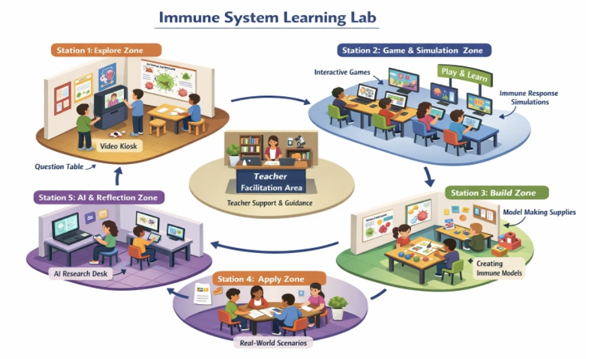

The teaching of Life Sciences at the secondary school level often involves complex and abstract biological processes that are difficult for learners to conceptualize through traditional instruction. Concepts such as the immune system require learners to understand dynamic processes that are not directly observable. This curriculum project responds to these challenges by introducing a technology-enhanced, makerspace-inspired learning module.
Within the CAPS curriculum, immunity is introduced as part of a broader unit on microorganisms and is allocated limited instructional time. The topic is often taught through text-based approaches, which may not support deep conceptual understanding. This project addresses this gap by providing structured, interactive learning experiences that support meaningful learning.
The module is designed as a blended learning environment integrating face-to-face instruction with digital tools. Learners engage with simulations, interactive content, and hands-on activities through a structured online platform. The teacher acts as a facilitator, supporting inquiry and guiding learning.
This curriculum design is informed by Experiential Learning Theory, which emphasizes learning through active engagement and reflection, and Cognitive Development Theory, which highlights the role of interaction in knowledge construction. Cognitive Load Theory further supports the structured presentation of content to enhance understanding.
